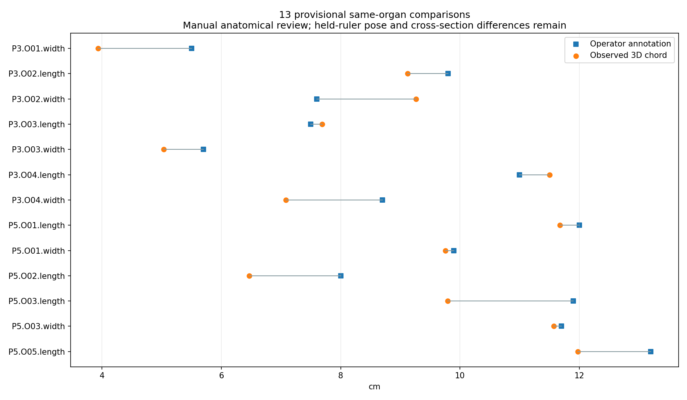
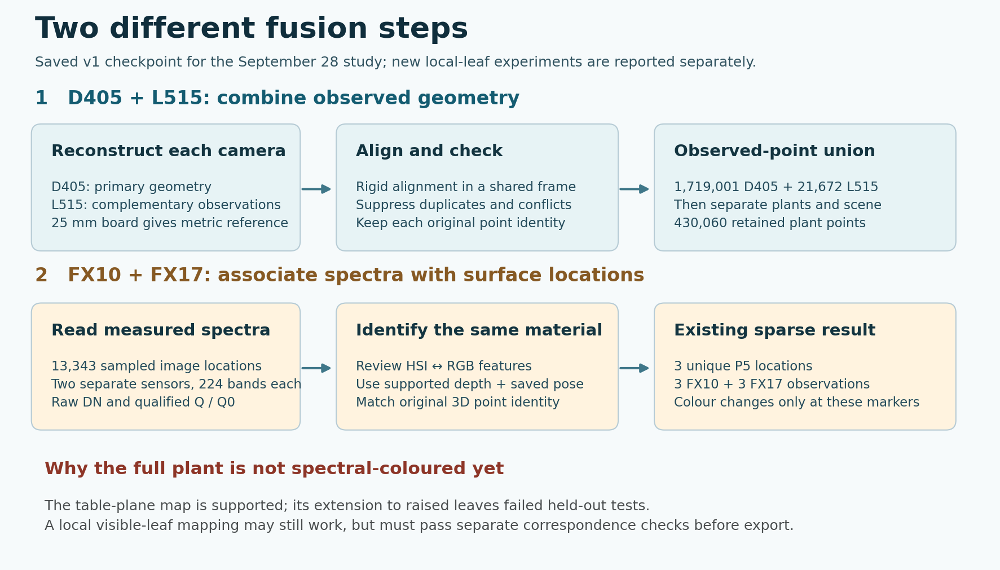

<script src="/research-assets.js"></script><!doctype html><html lang="en"><meta charset="utf-8"><meta name="viewport" content="width=device-width, initial-scale=1"><title>PhenoFusion3D · 8 October results review</title><style>*{box-sizing:border-box}body{margin:0;background:#f3f7f6;color:#143b3f;font:17px/1.65 system-ui}main{max-width:1100px;padding:40px 24px 80px;margin:auto}h1{font-size:clamp(32px,6vw,58px);line-height:1.1;margin:20px 0}h2{line-height:1.25}a{color:#075f68}a.button{display:inline-block;margin:5px 8px 5px 0;padding:10px 16px;background:#075f68;color:white;border-radius:7px;text-decoration:none}section{margin-top:32px;padding:24px;background:white;border-radius:12px;border:1px solid #d2dfdc}.notice{border-left:5px solid #b55b1b;background:#fff0dc;padding:20px}.grid{display:grid;grid-template-columns:repeat(auto-fit,minmax(245px,1fr));gap:16px}.metric{font-size:36px;font-weight:700}small{font-size:14px}img{width:100%;height:auto}li{margin:9px 0}.table{overflow-x:auto}table{width:100%;border-collapse:collapse;font-size:15px}th,td{text-align:left;vertical-align:top;border-bottom:1px solid #d2dfdc;padding:12px;min-width:125px}code{overflow-wrap:anywhere}.tag{font-size:13px;letter-spacing:.06em;text-transform:uppercase;font-weight:700}</style><main>
<a href="../">← Complete five-plant study</a><p class="tag">28 September acquisition · Follow-through saved 8 October 2026</p><h1>What we measured.<br>What still needs work.</h1><p>New manual-trait comparisons, an investigated dense spectral projection, and the complete tutor walkthrough. The original reconstructions and earlier results are preserved.</p>
<div class="notice"><strong>Later update: new partial surface and corrected control assessment.</strong> The experiments on this page are preserved as an earlier snapshot. Later checks found that one rejection control was already marked uncertain; the old residuals do not certify physical error. A separate exploratory two-leaf surface now contains 2,338 FX10 and 862 FX17 spectra. <a href="../fusion-rescue-20261008/index.html">Open the current fusion report and evidence →</a></div><div class="notice"><strong>The requested dense, reliable spectral fusion is still unfinished.</strong> The dense overlay below is a deliberately retained failed candidate, not an improvement accepted for measurement. Its colours come from measured spectra, but the tested image-to-surface association is inaccurate.</div>
<div class="grid"><section><div class="metric">13</div><strong>Conditional trait comparisons</strong><p>Seven lengths and six widths across eight matched organs. All 47 manual dimensions have a documented disposition.</p><a class="button" href="traits/index.html">Review measurements</a></section><section><div class="metric">1,613 / 643</div><strong>FX10 / FX17 diagnostic spectra</strong><p>All 224 native bands per sensor. One leaf patch; failed positional registration.</p><a class="button" href="dense-diagnostic/index.html">Inspect rejected overlay</a></section></div>
<section><h2>1. Manual traits: the comparisons are now calculated</h2><p>The earlier extraction was incomplete. Operator measurements are legitimate comparison references; the new work explicitly matches leaf identity and checks source endpoints in three RGB views. The remaining qualifications concern leaf pose, anatomical definitions and width sections.</p><div class="table"><table><thead><tr><th>Example</th><th>Operator</th><th>Observed 3D chord</th><th>Difference</th></tr></thead><tbody><tr><td>P5.O01 length</td><td>12.00 cm</td><td>11.679 cm</td><td>−0.321 cm</td></tr><tr><td>P5.O01 width</td><td>9.90 cm</td><td>9.758 cm</td><td>−0.142 cm</td></tr><tr><td>P3.O01 width</td><td>5.50 cm</td><td>3.936 cm</td><td>−1.564 cm</td></tr><tr><td>P3.O02 width</td><td>7.60 cm</td><td>9.266 cm</td><td>+1.666 cm</td></tr></tbody></table></div><p>The full report retains poor agreement and rejected endpoint attempts. Vertical point-cloud span is compared descriptively with the five height annotations; it is not substituted for stem-base-to-highest-tip height. No overall height accuracy or generalization score is claimed.</p><a href="traits/conditional_comparisons.csv">13 comparisons CSV</a> · <a href="traits/dimension_ledger_47.csv">47-dimension ledger</a> · <a href="traits/verification.json">Source and numerical verification</a></section>
<section><h2>2. Two different fusion operations</h2><p><strong>Geometry fusion:</strong> board-referenced rigid registration places L515 into the D405 frame. Duplicate and conflicting points are excluded; 21,672 L515 points are added to the 1,719,001-point D405 inspection cloud. Cleanup retains 430,060 tissue candidates. This does not fill unobserved leaf surfaces.</p><p><strong>Spectral association:</strong> a measured hyperspectral pixel must be matched to the same physical location on the 3D plant. Spectral values alone cannot identify that location. The earlier viewer contains six spectra at three P5 locations, hence three changing markers—not a complete spectral model.</p><a href="fusion-audit/REPORT.txt">Full explanation and historical-method audit</a></section>
<section><h2>3. Why the new dense overlay is rejected</h2><p>A six-landmark leaf-local image warp was checked using two known features excluded from fitting. Their errors were <strong>7.04 and 8.24 RGB pixels</strong>, exceeding the predeclared 3-pixel gate. Feature-only local warps, multiple RGB views and image refinement also failed to establish a passing dense HSI-to-RGB registration.</p><p>The retained diagnostic projects native FX10 pixels through that failed warp, then checks recorded depth, additional views and existing P5 vertices. FX17 values are attached only at tracked native FX17 pixels. Geometry support and exact detector-value checks pass; neither rescues a failed spectral location match.</p><ul><li>1,613 FX10 observations; 643 FX17 observations; 1,613 unchanged P5 vertices.</li><li>No invented or interpolated spectra; no modified 3D geometry; no whole-leaf or five-plant coverage claim.</li><li>Unknown per-point association error remains unknown. The two reviewed errors are not an upper bound for all points.</li><li>DN is measured; Q and Q0 are exploratory normalizations because white reflectance and shutter-closed dark capture are unconfirmed.</li></ul><a class="button" href="dense-diagnostic/index.html">Open rejected dense diagnostic</a><a href="dense-diagnostic/verification.json">Numerical verification</a> · <a href="fusion-experiments/manual_affine.json">Excluded-feature errors</a><p><strong>What did improve:</strong> local FX10↔FX17 image tracking found 11,023 candidate pixel tracks. This is useful intermediate evidence. Correct spectral-to-RGB-to-3D correspondence remains the missing link.</p></section>
<section><h2>4. How this differs from the older colourful result</h2><p>The August experimental page contains 10,485 projected spectral points across three different specimens. It used a dataset-specific image warp followed by RGB-depth lifting. Its visual density demonstrates a projection prototype; it does not establish independent spatial accuracy. We tested related local-warp approaches on the September leaves rather than assuming the old transformation transfers.</p><a href="https://phenofusion3d.github.io/results/experimental/">Historical experimental page</a> · <a href="fusion-audit/evidence.json">Audited counts and saved method evidence</a></section>
<section><h2>5. Tutor walkthrough and next capture</h2><p>Start with the metric board correction and geometry stages, then show the new trait evidence, explain the three-marker baseline, and show the failed dense candidate with its checked errors. The deliverable is a reproducible record of successful stages and tested limits—not a claim of complete spectral reconstruction.</p><div id="presentation-links"><a class="button" href="presentation/PhenoFusion3D_Final_Sprint_Review_v2.pdf">PhenoFusion3D_Final_Sprint_Review_v2.pdf</a> <a class="button" href="presentation/PhenoFusion3D_Final_Sprint_Review_v2.pptx">PhenoFusion3D_Final_Sprint_Review_v2.pptx</a> <a class="button" href="presentation/Presenter_Notes_and_Demo_Guide_v2.txt">Presenter_Notes_and_Demo_Guide_v2.txt</a></div><p>To finish a reliable dense model, acquire shared targets at several foliage heights and across the scan, retain independent elevated controls, record line timing/gantry positions and camera metadata, and use a calibrated pushbroom projection with visibility checks. Capture static, overlapping RGB-D views and consistent labelled manual endpoints. For reflectance, record a characterized white panel and confirmed dark frames at the same exposure.</p><p>Those observations would make the next mapping testable. The present experiments do not prove that every possible method on this dataset must fail.</p></section>
<p><small>Saved locally. Publishing requires the changes to reach the repository that actually serves phenofusion3d.github.io. A successful local build is not a live deployment. Capture, camera and gantry code were not edited for this follow-through.</small></p></main></html>